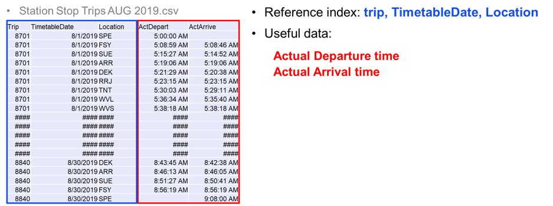
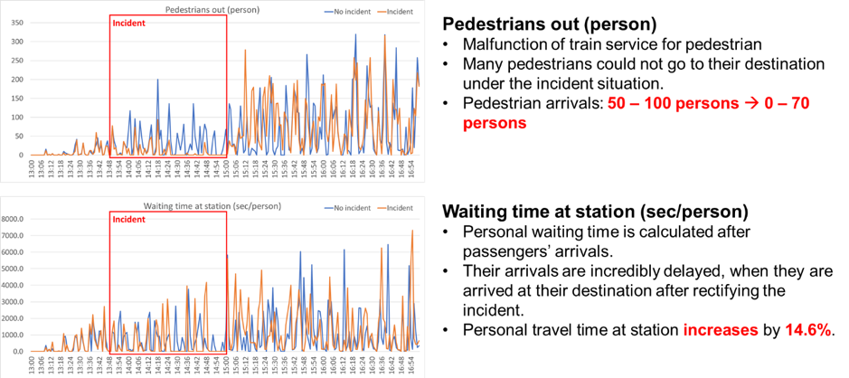

This project aims to construct a hybrid simulation platform to analyse disruption impacts on transit services and pedestrian behaviour. The challenges in this project include handling multi-sources data sets, modelling regional heterogeneous rail network, and investigating disruption impact on transit services and pedestrian travel patterns. The disruption analysis on railway network differs from other networks due to its limited resources, the fewer detour routes, and tremendous impacts on aggregated person-delay than road traffic analysis.
We thoroughly imitated the Geelong line, which is the most congested line in the Victorian regional train network operating by V/line Corporation in Australia to the AIMSUN simulation environment. We used five different data set, including RailSys track profiles, train GPS logger data, Service path data, Patronage data, and Trains run data, to imitate railway network in the AIMSUN. RailSys track profiles enables to construct realistic track network in Geelong line using maximum speed, track capacity, line name, directions, track purpose. Train GPS logger data is used to estimate service speed along the line under normal and disruption scenarios by a map matching methodology. Patronage data illustrate how many passengers joined/alighted each train at each station. Service path data contain actual departure and arrival time of each train at each station compared to the planned departure and arrival time. Trains run data provide master origin and destination data of each trip along the Geelong line.
Travel behaviour of patronage under incident scenario in Geelong line, which is the busiest line of V-line, are imitated using AIMSUN passenger simulation engine. The purpose of the patronage simulation is to quantify an incident impact on passenger behaviour along with Geelong line and to propose the effective countermeasure against non-recurrent events on V-line network to minimise passenger-delay. It includes the following main tasks:
- Analyse passenger demand patterns along with Geelong line
- Reconstruct passenger Origin-Destination matrix
- Imitate passenger behaviour within stations / between stations
- • Define the suitable performance index in simulation tasks
Three primary Input data involves the following sets:
Based on the above data sets, the estimation of the target-year trip volumes Tij that interchange between all pairs of zone i and j, where i is the trip-producing zone and j is the trip-attracting zone of the pair according to the following methods.
To construct OD matrix, the Gravity model is used as below:
And then, OD trips between 16 stations are estimated and then, divided into 15 minutes OD matrix to develop dynamic OD matrix.
To assign the estimated OD matrix, we construct realistic station layouts in AIMSUN as below:
It provides performance index of the station such as total walking time, mean stop time, travel time, and total travel distance.

We construct all stations layout to measure incident impact on the major line of V-line.
The overall performance index at the busiest station, Tarneit station, is given as below:
The proposed framework in this study will help transit planners and operators construct a flexible and efficient network management solution through an impact analysis of possible disruption scenarios in the hybrid simulation environment.